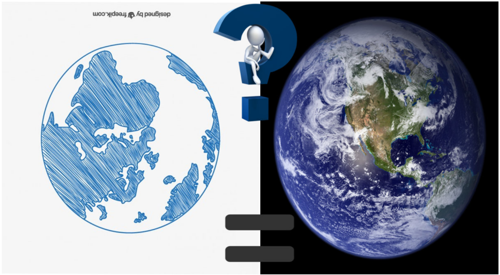
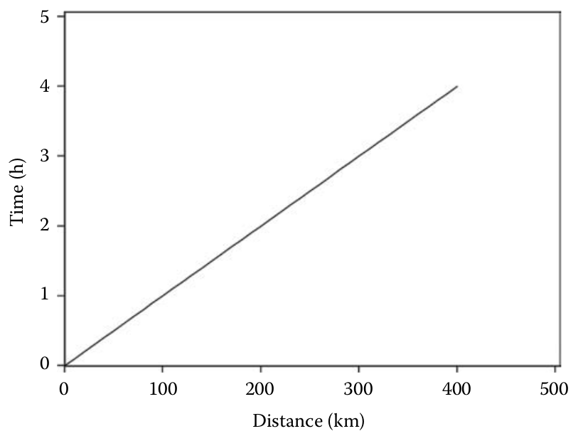
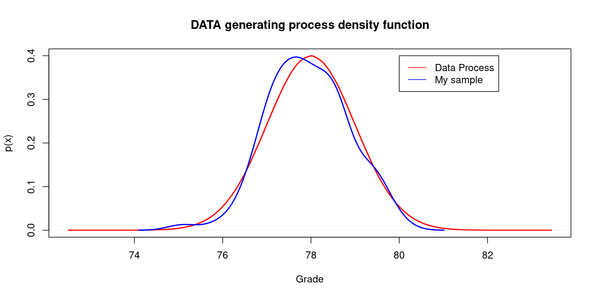

Introduction to important concepts in Statistics
Department of Psychology and Child Development
Reality, Nature, Science, and Models
It might seem trivial to talk about nature and how science related to nature. However, we will study nature when we study statistics.
As Westfall & Henning (2013) mentioned in their book: “Nature is all aspects of past, present, and future existence. Understanding Nature requires common observation—that is, it encompasses those things that we can agree we are observing” (p.1)
As psychologist we study behavior, thoughts, emotions, beliefs, cognition and contextual aspects of all the above. These elements are also part of nature, we mainly study constructs, I will talk about constructs frequently.
Statistics is the language of science. Statistics concerns the analysis of recorded information or data. Data are commonly observed and subject to common agreement and are therefore more likely to reflect our common reality or Nature.
Reality, Nature, Science, and Models II
To study and understand Nature we must construct a model for how Nature works.
A model helps you to understand Nature and also allows you to make predictions about Nature. There is no right or wrong model; they are all wrong! But some are better than others.

Statistical Models
We will focus on mathematical models integrated by equations and theorems.
Models cannot reflect exactly how Nature works, but it is close enough to allow us to make predictions and inferences.
Let’s create a model for driving distance.Imagine you drive at 100 km/hour, then we can predict your driving time \(y\) in hours by creating the following model: \(y = x/100\)
You could plug in any value to replace \(x\) and you’ll get a prediction:
Example:

Model produces data
- Pay attention to our model. The model just created produces data, if we replace \(x\) by other values, the model will give us new information:
Model produces data II
- A Model is like a recipe, it has some steps and rules that will help you to prepare a cake or a meal. The cake is your data.
Always remember!
Models produce data, data does not produce models!
You can use data to estimate models, but that does not change the fact that your model comes first, before you ever see any data.
You can use data to estimate models, but that does not change the fact that your model comes first, before you ever see any data.
Statistical Processes
Always remember!
The order matters, Nature is there before our measurements,the data comes after we establish our way to measure Nature.
Statistical Processes II
Westfall & Henning (2013) are doing an important distinction:
They present DATA with upper case to differentiate data with lower case. Why?
When we talk about Nature we are talking about infinite numbers of observations, from these infinite number of possibilities we extract a portion of DATA, this is similar to the concept of population. For instance, your DATA could be all the college students in California.
data (lowercase) means that we already collected a sample from that DATA. For example, if you get information from only college students from valley, you’ll have one single instance of what is possible in your population.
Your data is the only way we have to say something about the DATA.
Prior collecting data, the DATA is random, unknown.
Statistical Processes III
More about models
We will use the term “probability model” , we will represent this term using: \(p(y)\) which translates into “probability of \(y\)”.
Let’s use the flipping coin example. We know that the probability of flipping a coin and getting heads is 50%, same probability can be observed for tails (50%). Then, we can represent this probability by \(p(heads) = 0.5\) or \(p(tail) = 0.5\).
This is actually a good model! Every time, it produces as many random coin flips as you like. Models produce data means: that YOUR model is a model the explains how your DATA will be produced!
Your model for Nature is that your DATA come from a probability model \(p(y).\)
Statistical Processes IV
Our model \(p(y)\) can be used to predict and explain Nature. A prediction is a guess about unknown events in the past, present or future or about events that might not happen at all.
It is more like asking “What-if” .For example, what if I had extra $3000 to pay my credit balance?
Deterministic vs. Probabilistic
- In science, you’ll find models that are deterministic, that means; our outcome is completely determined by our \(x\)
Let’s see this example: Free Fall Calculator
In physics you’ll find several examples of deterministic models, especially from the Newtonian perspective.
Normally these models are represented with \(f(.)\) instead of \(p(.)\), for example the driving distance example can be written as \(f(x) = x/100\).
This symbol \(f(x)\) means mathematical function. The function will give us only one solution in the case of a deterministic mode. We plug in values and we get a solution. (\(y = f(x)\)).
Deterministic vs. Probabilistic II
Probabilistic models models assume variability , they are not deterministic, probabilistic models produce data that varies, therefore we’ll have distributions.
Probabilistic models are more realistic to explain phenomena in psychology.
The following expresion represents a probabilistic model:
- The symbol \(\sim\) can be read aloud either as “produced by” or “distributed as.” In a complete sentence, the mathematical shorthand \(Y \sim p(y)\) states that your \(DATA\) \(Y\) are produced by a probability model having mathematical form \(p(y)\).
Variability
Would a deterministic model explain how people feel after a traumatic event?
Can we plug in values in a deterministic function to predict your attention span while driving?
You must use a probabilistic (stochastic) models to study natural variability.
Parameters
- A parameter is a numerical characteristic of the data-generating process, one that is usually unknown but often can be estimated using data.
For instance, in the model showed above, we have two unknown parameters, this model produces data \(Y\). The unknown parameters are represented with greek letters, for instance the letter beta in the example above.
Mantra
Model produces data.
Model has unknown parameters.
Data reduce the uncertainty about the unknown parameters.
Purely Probabilistic Statistical Models
In a probabilistic model the variable \(Y\) is produced at random. This statement is represented by \(Y \sim p(y)\).
\(p(y)\) is called a probability density function (pdf).
A pdf assigns a likelihood to your values. I will explain this in the next sessions.
IMPORTANT: A purely probabilistic statistical model states that a variable \(Y\) is produced by a pdf having unknown parameters. In symbolic shorthand, the model is given as \(Y \sim p(y|\theta )\). This greek letter \(\theta\) is called “theta”.
Purely Probabilistic Statistical Models II
- Let’s think that Nature is also observable in our class. Our class belongs to the data generating process of grades in stats classes in the world. Let’s also assume that the data generating process of grades is normally distributed with a mean of 78 (out of 100) and standard deviation of 1. We can also imagine that we have a single sample of 100 students that have taken stats classes. Let’s check the graph…
set.seed(1234)
dataProcess <- rnorm(16000000,
mean = 78,
sd = 1)
grades <- rnorm(100,
mean = 78,
sd = 1)
plot(density(dataProcess),
lwd = 2,
col = "red",
main = "DATA generating process",
xlab = "Grade",
ylab = "p(x)")
lines(density(grades),
col = "blue",
lwd = 2)
legend(80, 0.4,
legend=c("Data Process", "My sample"),
col=c("red", "blue"), lty=1)
Purely Probabilistic Statistical Models III
I just used the word “assume” , probabilistic models have assumptions. In the previous example we assumed:
- The data generating process is normally distributed.
- We assumed a value for the mean.
- We assumed a value for the standard deviation.
Statistical Inference
- Normally if we flip a coin we have around 0.50 probability of getting tails, and also around 0.50 of getting heads. But, what would happen if we bend the coin? Are you sure you’ll get 0.50 probability? Can we assume the same probability?
| Outcome, \(y\) | \(p(y)\) |
|---|---|
| Tails | 1 - \(\pi\) |
| Heads | \(\pi\) |
| Total | 1.00 |
- Now we have uncertainty, we can only assume that there is a probability represented by \(\pi\). That’s the only think we know.
Statistical Inference II
We need to collect data to reduce the uncertainty about the unknown parameters.
The reduction in uncertainty about model parameters that you achieve when you collect data is called statistical inference
Estimands, estimates, and estimators
I mentioned before that DATA is RANDOM, this means that there is a distribution of values in the universe for what you are studying.
For instance, there is a random distribution of possible romantic relationships for all of you.
But, we need to make our research idea more operative. Let me try:
- We need to define an estimand, we could use \(\mu\) as our estimand.
- \(\mu\) will be our data generating process mean.
- In our example it could the average number of romantic relationships in young adults in United States. This process must have a value for \(\mu\) but we don’t know it in real life.
- We will also need a random estimator, in this case we can use the sample mean as our estimator. Why? Because we can assume that there is a distribution of random means. We could assume that each time I ask: how many romantic relationships have you had? I will get a different mean value.
- We will need also an estimate which is a particular observation on our estimator. For example, if I ask you today how many romantic relationships have you had? The mean could be \(\bar{y} = 4\). This is a fixed data (lowercase) point that comes from our estimator.
- We need to define an estimand, we could use \(\mu\) as our estimand.
Simulation time
Following my example of number of romantic relationships, we could simulate data using our estimand (\(\mu\)).
Let’s assume \(\mu=5\) , we want to simulate multiple data sets, let’s simulate 2000 data sets. This is equivalent to conduct the same study 2000 times.
Each data set contains 13 observations, why? We are assuming we are asking the same question 2000 times to multiple classes similar to our class.
We will use our estimator the sampled mean to find out if our data is close the mean of the process which is \(\mu=5\).
Show the code
- 1
- Package that helps to repeat the same action.
- 2
- The estimand.
- 3
- Number of observations in each simulated data set.
- 4
- Number of data sets generated
- 5
- The estimated mean in each data set.
Simulation time: Results
Show the code
library(ggplot2)
ggplot(data.frame(multipleSamples), aes(x=multipleSamples)) +
geom_histogram(color="black", fill="white")+
geom_vline(aes(xintercept=mean(multipleSamples)),
color="blue",
linetype="dashed",
linewidth=1) +
ggtitle("Histogram of generated means")+
xlab("Sampled means") +
ylab("Frequency")+
annotate(geom= "text", x=4, y=150, label="Mean = 5.002",
color="blue")+
theme_classic()Simulation time: Results
References